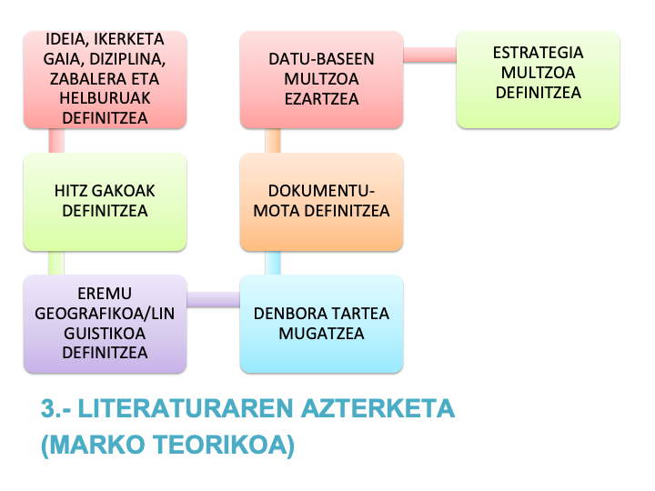
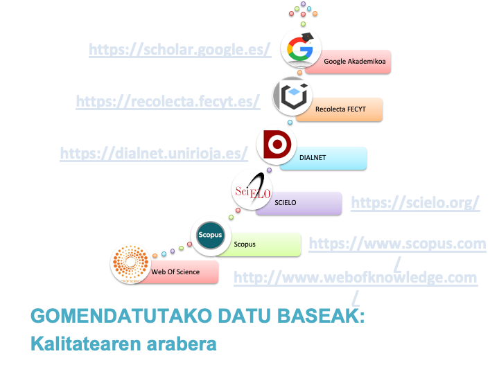

1.2.- Marko Teorikoa
Atal honetan eremu zientifikoan antzeko galderak eta problema komunak ebatzi nahi dituzten informazio iturriak aztertu behar dira, GAIAREN inguruan indarrean dauden EKARPENAK azpimarratuz. Horretarako, DATU BASEEN BILAKETA BIBLIOGRAFIKOA eta adituen kontsulta egin behar da, IKUSPEGIEN, TEORIEN ETA AUTOREEN IBILBIDE bat eginez. alde eta kontrako argudioak ere barnean daudelarik. GRAL EGILEAREN AHOTSA ETA POSIZIONAMENDUAK EZ DIRA ENTZUN BEHAR.
- Sostengu-esparru Teorikoa
- Aurretiazko Ikerketak
Bilaketak egiteko ondorengo datu baseak gomendatzen dira:
- WoS: https://apps.webofknowledge.com/
- SCOPUS: https://www.scopus.com/
- DIALNET: https://dialnet.unirioja.es/
- ERIC: https://www.eric.ed.gov/
- SCIELO: https://scielo.org/es/
Irakurtzeko errazagoa
Ikusizko laguntza


2.1.- Ikerketa Diseinua
Irakurritakoarekin hobetu.
2.2.- Hipotesiak eta Aldagaiak
Bakarrik Ikerketa kuantitatiboa denean…